Training on AssociateTracks8.csv Data¶
[1]:
# DGCNN v 0.4.0
# Last edit: 22/02/2022
[2]:
# pip install matplotlib==3.3.4 -> Optional
[3]:
import os
import sys
import glob
import h5py
import math
import matplotlib.pyplot as plt
import seaborn as sns
import numpy as np
import pandas as pd
import tensorflow as tf
from tensorflow import keras
[4]:
import DGCNN_toolkit as nn
import analysis_toolkit as atk
[5]:
df = pd.read_csv("AssociateTracks8.csv")
df.head()
[5]:
| iEvent | iHit | planeRec | wireRec | HitRecTime0 | HitRecTime1 | Charge0 | Charge1 | x | y | z | dchMCHitId | idxTrk | parent | track | particle | |
|---|---|---|---|---|---|---|---|---|---|---|---|---|---|---|---|---|
| 0 | 0 | 0 | 1 | 297 | -2.265900e-07 | -2.287020e-07 | 2.456280e-10 | 3.381540e-10 | -23.9023 | 1.882950 | 47.445000 | 43.0 | 5.0 | -1.0 | 1 | 2.0 |
| 1 | 0 | 1 | 1 | 298 | -3.645500e-07 | -3.665130e-07 | 5.616130e-10 | 6.533530e-10 | -23.2507 | -0.745385 | 22.603200 | 44.0 | 5.0 | -1.0 | 1 | 2.0 |
| 2 | 0 | 2 | 1 | 313 | -2.922580e-07 | -2.916970e-07 | 1.225900e-09 | 4.086350e-10 | -28.4720 | -12.436400 | -149.675000 | NaN | NaN | NaN | 3 | NaN |
| 3 | 0 | 3 | 1 | 313 | -2.530840e-07 | -2.535690e-07 | 8.378640e-10 | 8.398460e-10 | -21.8402 | 7.366170 | 0.353747 | 25.0 | 5.0 | -1.0 | 1 | 2.0 |
| 4 | 0 | 4 | 1 | 314 | -3.646010e-07 | -3.651530e-07 | 6.277870e-10 | 6.410150e-10 | -21.4532 | 8.437870 | 3.120980 | 26.0 | 5.0 | -1.0 | 1 | 2.0 |
Rows with NaN are due to noise hits
There are 70k events, but 100k was generated.
Some of them are not here, because if no hits are detected in the detector, they were not written to the csv file.
[6]:
df[df.iEvent == 5].head()
[6]:
| iEvent | iHit | planeRec | wireRec | HitRecTime0 | HitRecTime1 | Charge0 | Charge1 | x | y | z | dchMCHitId | idxTrk | parent | track | particle | |
|---|---|---|---|---|---|---|---|---|---|---|---|---|---|---|---|---|
| 59 | 5 | 0 | 1 | 202 | -3.811770e-07 | -3.806270e-07 | 4.042820e-10 | 3.634120e-10 | 22.35520 | 6.03474 | -15.93640 | 15.0 | 0.0 | -1.0 | 2 | 3.0 |
| 60 | 5 | 1 | 1 | 203 | -1.919240e-07 | -1.912570e-07 | 5.294380e-10 | 4.785150e-10 | 22.55590 | 5.18795 | -15.12360 | 14.0 | 0.0 | -1.0 | 2 | 3.0 |
| 61 | 5 | 2 | 1 | 231 | -2.522800e-07 | -2.519160e-07 | 5.411510e-10 | 5.277170e-10 | 16.73340 | -15.85940 | -3.76244 | 13.0 | 0.0 | -1.0 | 2 | 3.0 |
| 62 | 5 | 3 | 1 | 232 | -3.849620e-07 | -3.847320e-07 | 3.981010e-10 | 3.669230e-10 | 17.05940 | -15.59200 | -12.20000 | NaN | NaN | NaN | 3 | NaN |
| 63 | 5 | 4 | 1 | 245 | -2.000500e-07 | -1.987600e-07 | 1.813670e-10 | 2.038980e-10 | 5.19372 | -22.58790 | 17.50650 | 41.0 | 0.0 | -1.0 | 2 | 3.0 |
[7]:
# Trigger Condition
# Trigger is applied just to make the plot more appealing
# We don't lose many hits
trig_df = df[(df["HitRecTime0"]<0) & (df["HitRecTime0"]>-7e-7)]
trig_df.shape
del df
[8]:
atk.sup_plot(trig_df,400, 4*10**-9)
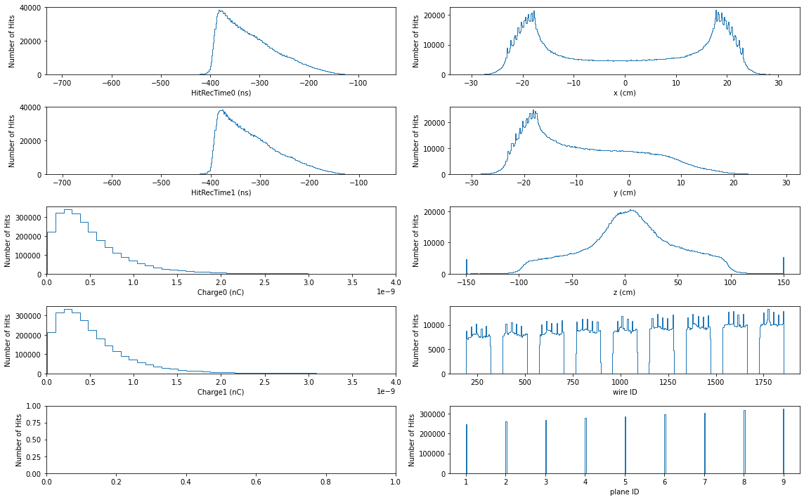
[9]:
# The dataframe must be split into data and labels
data, label = nn.prepare_input(trig_df, "MC")
[10]:
# Separate test and training set
from sklearn.model_selection import train_test_split
X_train, X_test, y_train, y_test = train_test_split(
data, label, test_size=0.20, random_state=42)
[11]:
### Uncomment if you don't have enough memory #####
#
del data, label
#
### Uncomment if you don't have enough memory #####
[12]:
# Create Dataset objects to be fed into neural network.
num_hits = 432
num_classes = 5
train = nn.Dataset(X_train, y_train, num_classes, num_clouds=None)
test = nn.Dataset(X_test, y_test, num_classes, num_clouds=None)
[13]:
# Show the related shapes
print(train['points'].shape)
print(test['points'].shape)
print(train['features'].shape)
print(test['features'].shape)
print(train['mask'].shape)
print(test['mask'].shape)
(56765, 432, 3)
(14192, 432, 3)
(56765, 432, 3)
(14192, 432, 3)
(56765, 432, 1)
(14192, 432, 1)
[14]:
# Show the related shapes
input_shapes = {k:train[k].shape[1:] for k in train.X}
print(input_shapes)
model = nn.get_DGCNN(num_classes, input_shapes)
{'points': (432, 3), 'features': (432, 3), 'mask': (432, 1)}
[15]:
# Compile the model and diplay its summary
model.compile(loss='categorical_crossentropy',
optimizer=keras.optimizers.Adam(learning_rate=nn.lr_schedule(0)),
metrics=[nn.phys_accuracy_onnx])
model.summary()
Model: "DGCNN_SG"
__________________________________________________________________________________________________
Layer (type) Output Shape Param # Connected to
==================================================================================================
mask (InputLayer) [(None, 432, 1)] 0
__________________________________________________________________________________________________
tf_op_layer_NotEqual (TensorFlo [(None, 432, 1)] 0 mask[0][0]
__________________________________________________________________________________________________
tf_op_layer_Cast (TensorFlowOpL [(None, 432, 1)] 0 tf_op_layer_NotEqual[0][0]
__________________________________________________________________________________________________
tf_op_layer_Equal (TensorFlowOp [(None, 432, 1)] 0 tf_op_layer_Cast[0][0]
__________________________________________________________________________________________________
tf_op_layer_Cast_1 (TensorFlowO [(None, 432, 1)] 0 tf_op_layer_Equal[0][0]
__________________________________________________________________________________________________
tf_op_layer_Mul (TensorFlowOpLa [(None, 432, 1)] 0 tf_op_layer_Cast_1[0][0]
__________________________________________________________________________________________________
points (InputLayer) [(None, 432, 3)] 0
__________________________________________________________________________________________________
tf_op_layer_Add (TensorFlowOpLa [(None, 432, 3)] 0 tf_op_layer_Mul[0][0]
points[0][0]
__________________________________________________________________________________________________
features (InputLayer) [(None, 432, 3)] 0
__________________________________________________________________________________________________
tf_op_layer_Transpose (TensorFl [(None, 3, 432)] 0 tf_op_layer_Add[0][0]
__________________________________________________________________________________________________
tf_op_layer_ExpandDims (TensorF [(None, 432, 1, 3)] 0 features[0][0]
__________________________________________________________________________________________________
tf_op_layer_Mul_1 (TensorFlowOp [(None, 432, 3)] 0 tf_op_layer_Add[0][0]
tf_op_layer_Add[0][0]
__________________________________________________________________________________________________
tf_op_layer_BatchMatMulV2 (Tens [(None, 432, 432)] 0 tf_op_layer_Add[0][0]
tf_op_layer_Transpose[0][0]
__________________________________________________________________________________________________
tf_op_layer_Mul_2 (TensorFlowOp [(None, 432, 3)] 0 tf_op_layer_Add[0][0]
tf_op_layer_Add[0][0]
__________________________________________________________________________________________________
DGCNN_SG_fts_bn (BatchNormaliza (None, 432, 1, 3) 12 tf_op_layer_ExpandDims[0][0]
__________________________________________________________________________________________________
tf_op_layer_Sum (TensorFlowOpLa [(None, 432, 1)] 0 tf_op_layer_Mul_1[0][0]
__________________________________________________________________________________________________
tf_op_layer_Mul_3 (TensorFlowOp [(None, 432, 432)] 0 tf_op_layer_BatchMatMulV2[0][0]
__________________________________________________________________________________________________
tf_op_layer_Sum_1 (TensorFlowOp [(None, 432, 1)] 0 tf_op_layer_Mul_2[0][0]
__________________________________________________________________________________________________
tf_op_layer_Squeeze (TensorFlow [(None, 432, 3)] 0 DGCNN_SG_fts_bn[0][0]
__________________________________________________________________________________________________
tf_op_layer_Sub (TensorFlowOpLa [(None, 432, 432)] 0 tf_op_layer_Sum[0][0]
tf_op_layer_Mul_3[0][0]
__________________________________________________________________________________________________
tf_op_layer_Transpose_1 (Tensor [(None, 1, 432)] 0 tf_op_layer_Sum_1[0][0]
__________________________________________________________________________________________________
tf_op_layer_Shape (TensorFlowOp [(3,)] 0 tf_op_layer_Squeeze[0][0]
__________________________________________________________________________________________________
tf_op_layer_AddV2 (TensorFlowOp [(None, 432, 432)] 0 tf_op_layer_Sub[0][0]
tf_op_layer_Transpose_1[0][0]
__________________________________________________________________________________________________
tf_op_layer_strided_slice_1 (Te [()] 0 tf_op_layer_Shape[0][0]
__________________________________________________________________________________________________
tf_op_layer_Neg (TensorFlowOpLa [(None, 432, 432)] 0 tf_op_layer_AddV2[0][0]
__________________________________________________________________________________________________
tf_op_layer_Range (TensorFlowOp [(None,)] 0 tf_op_layer_strided_slice_1[0][0]
__________________________________________________________________________________________________
tf_op_layer_TopKV2 (TensorFlowO [(None, 432, 21), (N 0 tf_op_layer_Neg[0][0]
__________________________________________________________________________________________________
tf_op_layer_Reshape (TensorFlow [(None, 1, 1, 1)] 0 tf_op_layer_Range[0][0]
__________________________________________________________________________________________________
tf_op_layer_strided_slice (Tens [(None, 432, 20)] 0 tf_op_layer_TopKV2[0][1]
__________________________________________________________________________________________________
tf_op_layer_Tile (TensorFlowOpL [(None, 432, 20, 1)] 0 tf_op_layer_Reshape[0][0]
__________________________________________________________________________________________________
tf_op_layer_ExpandDims_1 (Tenso [(None, 432, 20, 1)] 0 tf_op_layer_strided_slice[0][0]
__________________________________________________________________________________________________
tf_op_layer_ExpandDims_2 (Tenso [(None, 432, 1, 3)] 0 tf_op_layer_Squeeze[0][0]
__________________________________________________________________________________________________
tf_op_layer_concat (TensorFlowO [(None, 432, 20, 2)] 0 tf_op_layer_Tile[0][0]
tf_op_layer_ExpandDims_1[0][0]
__________________________________________________________________________________________________
tf_op_layer_Tile_1 (TensorFlowO [(None, 432, 20, 3)] 0 tf_op_layer_ExpandDims_2[0][0]
__________________________________________________________________________________________________
tf_op_layer_GatherNd (TensorFlo [(None, 432, 20, 3)] 0 tf_op_layer_Squeeze[0][0]
tf_op_layer_concat[0][0]
__________________________________________________________________________________________________
tf_op_layer_Sub_1 (TensorFlowOp [(None, 432, 20, 3)] 0 tf_op_layer_GatherNd[0][0]
tf_op_layer_Tile_1[0][0]
__________________________________________________________________________________________________
tf_op_layer_concat_1 (TensorFlo [(None, 432, 20, 6)] 0 tf_op_layer_Tile_1[0][0]
tf_op_layer_Sub_1[0][0]
__________________________________________________________________________________________________
DGCNN_SG_EdgeConv0_conv0 (Conv2 (None, 432, 20, 64) 384 tf_op_layer_concat_1[0][0]
__________________________________________________________________________________________________
DGCNN_SG_EdgeConv0_bn0 (BatchNo (None, 432, 20, 64) 256 DGCNN_SG_EdgeConv0_conv0[0][0]
__________________________________________________________________________________________________
DGCNN_SG_EdgeConv0_act0 (Activa (None, 432, 20, 64) 0 DGCNN_SG_EdgeConv0_bn0[0][0]
__________________________________________________________________________________________________
DGCNN_SG_EdgeConv0_conv1 (Conv2 (None, 432, 20, 64) 4096 DGCNN_SG_EdgeConv0_act0[0][0]
__________________________________________________________________________________________________
DGCNN_SG_EdgeConv0_bn1 (BatchNo (None, 432, 20, 64) 256 DGCNN_SG_EdgeConv0_conv1[0][0]
__________________________________________________________________________________________________
DGCNN_SG_EdgeConv0_act1 (Activa (None, 432, 20, 64) 0 DGCNN_SG_EdgeConv0_bn1[0][0]
__________________________________________________________________________________________________
tf_op_layer_ExpandDims_3 (Tenso [(None, 432, 1, 3)] 0 tf_op_layer_Squeeze[0][0]
__________________________________________________________________________________________________
DGCNN_SG_EdgeConv0_conv2 (Conv2 (None, 432, 20, 64) 4096 DGCNN_SG_EdgeConv0_act1[0][0]
__________________________________________________________________________________________________
DGCNN_SG_EdgeConv0_sc_conv (Con (None, 432, 1, 64) 192 tf_op_layer_ExpandDims_3[0][0]
__________________________________________________________________________________________________
DGCNN_SG_EdgeConv0_bn2 (BatchNo (None, 432, 20, 64) 256 DGCNN_SG_EdgeConv0_conv2[0][0]
__________________________________________________________________________________________________
DGCNN_SG_EdgeConv0_sc_bn (Batch (None, 432, 1, 64) 256 DGCNN_SG_EdgeConv0_sc_conv[0][0]
__________________________________________________________________________________________________
DGCNN_SG_EdgeConv0_act2 (Activa (None, 432, 20, 64) 0 DGCNN_SG_EdgeConv0_bn2[0][0]
__________________________________________________________________________________________________
tf_op_layer_Squeeze_1 (TensorFl [(None, 432, 64)] 0 DGCNN_SG_EdgeConv0_sc_bn[0][0]
__________________________________________________________________________________________________
tf_op_layer_Max (TensorFlowOpLa [(None, 432, 64)] 0 DGCNN_SG_EdgeConv0_act2[0][0]
__________________________________________________________________________________________________
tf_op_layer_AddV2_1 (TensorFlow [(None, 432, 64)] 0 tf_op_layer_Squeeze_1[0][0]
tf_op_layer_Max[0][0]
__________________________________________________________________________________________________
DGCNN_SG_EdgeConv0_sc_act (Acti (None, 432, 64) 0 tf_op_layer_AddV2_1[0][0]
__________________________________________________________________________________________________
tf_op_layer_Add_1 (TensorFlowOp [(None, 432, 64)] 0 tf_op_layer_Mul[0][0]
DGCNN_SG_EdgeConv0_sc_act[0][0]
__________________________________________________________________________________________________
tf_op_layer_Transpose_2 (Tensor [(None, 64, 432)] 0 tf_op_layer_Add_1[0][0]
__________________________________________________________________________________________________
tf_op_layer_Mul_4 (TensorFlowOp [(None, 432, 64)] 0 tf_op_layer_Add_1[0][0]
tf_op_layer_Add_1[0][0]
__________________________________________________________________________________________________
tf_op_layer_BatchMatMulV2_1 (Te [(None, 432, 432)] 0 tf_op_layer_Add_1[0][0]
tf_op_layer_Transpose_2[0][0]
__________________________________________________________________________________________________
tf_op_layer_Mul_5 (TensorFlowOp [(None, 432, 64)] 0 tf_op_layer_Add_1[0][0]
tf_op_layer_Add_1[0][0]
__________________________________________________________________________________________________
tf_op_layer_Sum_2 (TensorFlowOp [(None, 432, 1)] 0 tf_op_layer_Mul_4[0][0]
__________________________________________________________________________________________________
tf_op_layer_Mul_6 (TensorFlowOp [(None, 432, 432)] 0 tf_op_layer_BatchMatMulV2_1[0][0]
__________________________________________________________________________________________________
tf_op_layer_Sum_3 (TensorFlowOp [(None, 432, 1)] 0 tf_op_layer_Mul_5[0][0]
__________________________________________________________________________________________________
tf_op_layer_Sub_2 (TensorFlowOp [(None, 432, 432)] 0 tf_op_layer_Sum_2[0][0]
tf_op_layer_Mul_6[0][0]
__________________________________________________________________________________________________
tf_op_layer_Transpose_3 (Tensor [(None, 1, 432)] 0 tf_op_layer_Sum_3[0][0]
__________________________________________________________________________________________________
tf_op_layer_Shape_1 (TensorFlow [(3,)] 0 DGCNN_SG_EdgeConv0_sc_act[0][0]
__________________________________________________________________________________________________
tf_op_layer_AddV2_2 (TensorFlow [(None, 432, 432)] 0 tf_op_layer_Sub_2[0][0]
tf_op_layer_Transpose_3[0][0]
__________________________________________________________________________________________________
tf_op_layer_strided_slice_3 (Te [()] 0 tf_op_layer_Shape_1[0][0]
__________________________________________________________________________________________________
tf_op_layer_Neg_1 (TensorFlowOp [(None, 432, 432)] 0 tf_op_layer_AddV2_2[0][0]
__________________________________________________________________________________________________
tf_op_layer_Range_1 (TensorFlow [(None,)] 0 tf_op_layer_strided_slice_3[0][0]
__________________________________________________________________________________________________
tf_op_layer_TopKV2_1 (TensorFlo [(None, 432, 21), (N 0 tf_op_layer_Neg_1[0][0]
__________________________________________________________________________________________________
tf_op_layer_Reshape_1 (TensorFl [(None, 1, 1, 1)] 0 tf_op_layer_Range_1[0][0]
__________________________________________________________________________________________________
tf_op_layer_strided_slice_2 (Te [(None, 432, 20)] 0 tf_op_layer_TopKV2_1[0][1]
__________________________________________________________________________________________________
tf_op_layer_Tile_2 (TensorFlowO [(None, 432, 20, 1)] 0 tf_op_layer_Reshape_1[0][0]
__________________________________________________________________________________________________
tf_op_layer_ExpandDims_4 (Tenso [(None, 432, 20, 1)] 0 tf_op_layer_strided_slice_2[0][0]
__________________________________________________________________________________________________
tf_op_layer_ExpandDims_5 (Tenso [(None, 432, 1, 64)] 0 DGCNN_SG_EdgeConv0_sc_act[0][0]
__________________________________________________________________________________________________
tf_op_layer_concat_2 (TensorFlo [(None, 432, 20, 2)] 0 tf_op_layer_Tile_2[0][0]
tf_op_layer_ExpandDims_4[0][0]
__________________________________________________________________________________________________
tf_op_layer_Tile_3 (TensorFlowO [(None, 432, 20, 64) 0 tf_op_layer_ExpandDims_5[0][0]
__________________________________________________________________________________________________
tf_op_layer_GatherNd_1 (TensorF [(None, 432, 20, 64) 0 DGCNN_SG_EdgeConv0_sc_act[0][0]
tf_op_layer_concat_2[0][0]
__________________________________________________________________________________________________
tf_op_layer_Sub_3 (TensorFlowOp [(None, 432, 20, 64) 0 tf_op_layer_GatherNd_1[0][0]
tf_op_layer_Tile_3[0][0]
__________________________________________________________________________________________________
tf_op_layer_concat_3 (TensorFlo [(None, 432, 20, 128 0 tf_op_layer_Tile_3[0][0]
tf_op_layer_Sub_3[0][0]
__________________________________________________________________________________________________
DGCNN_SG_EdgeConv1_conv0 (Conv2 (None, 432, 20, 64) 8192 tf_op_layer_concat_3[0][0]
__________________________________________________________________________________________________
DGCNN_SG_EdgeConv1_bn0 (BatchNo (None, 432, 20, 64) 256 DGCNN_SG_EdgeConv1_conv0[0][0]
__________________________________________________________________________________________________
DGCNN_SG_EdgeConv1_act0 (Activa (None, 432, 20, 64) 0 DGCNN_SG_EdgeConv1_bn0[0][0]
__________________________________________________________________________________________________
DGCNN_SG_EdgeConv1_conv1 (Conv2 (None, 432, 20, 64) 4096 DGCNN_SG_EdgeConv1_act0[0][0]
__________________________________________________________________________________________________
DGCNN_SG_EdgeConv1_bn1 (BatchNo (None, 432, 20, 64) 256 DGCNN_SG_EdgeConv1_conv1[0][0]
__________________________________________________________________________________________________
DGCNN_SG_EdgeConv1_act1 (Activa (None, 432, 20, 64) 0 DGCNN_SG_EdgeConv1_bn1[0][0]
__________________________________________________________________________________________________
tf_op_layer_ExpandDims_6 (Tenso [(None, 432, 1, 64)] 0 DGCNN_SG_EdgeConv0_sc_act[0][0]
__________________________________________________________________________________________________
DGCNN_SG_EdgeConv1_conv2 (Conv2 (None, 432, 20, 64) 4096 DGCNN_SG_EdgeConv1_act1[0][0]
__________________________________________________________________________________________________
DGCNN_SG_EdgeConv1_sc_conv (Con (None, 432, 1, 64) 4096 tf_op_layer_ExpandDims_6[0][0]
__________________________________________________________________________________________________
DGCNN_SG_EdgeConv1_bn2 (BatchNo (None, 432, 20, 64) 256 DGCNN_SG_EdgeConv1_conv2[0][0]
__________________________________________________________________________________________________
DGCNN_SG_EdgeConv1_sc_bn (Batch (None, 432, 1, 64) 256 DGCNN_SG_EdgeConv1_sc_conv[0][0]
__________________________________________________________________________________________________
DGCNN_SG_EdgeConv1_act2 (Activa (None, 432, 20, 64) 0 DGCNN_SG_EdgeConv1_bn2[0][0]
__________________________________________________________________________________________________
tf_op_layer_Squeeze_2 (TensorFl [(None, 432, 64)] 0 DGCNN_SG_EdgeConv1_sc_bn[0][0]
__________________________________________________________________________________________________
tf_op_layer_Max_1 (TensorFlowOp [(None, 432, 64)] 0 DGCNN_SG_EdgeConv1_act2[0][0]
__________________________________________________________________________________________________
tf_op_layer_AddV2_3 (TensorFlow [(None, 432, 64)] 0 tf_op_layer_Squeeze_2[0][0]
tf_op_layer_Max_1[0][0]
__________________________________________________________________________________________________
DGCNN_SG_EdgeConv1_sc_act (Acti (None, 432, 64) 0 tf_op_layer_AddV2_3[0][0]
__________________________________________________________________________________________________
tf_op_layer_Add_2 (TensorFlowOp [(None, 432, 64)] 0 tf_op_layer_Mul[0][0]
DGCNN_SG_EdgeConv1_sc_act[0][0]
__________________________________________________________________________________________________
tf_op_layer_Transpose_4 (Tensor [(None, 64, 432)] 0 tf_op_layer_Add_2[0][0]
__________________________________________________________________________________________________
tf_op_layer_Mul_7 (TensorFlowOp [(None, 432, 64)] 0 tf_op_layer_Add_2[0][0]
tf_op_layer_Add_2[0][0]
__________________________________________________________________________________________________
tf_op_layer_BatchMatMulV2_2 (Te [(None, 432, 432)] 0 tf_op_layer_Add_2[0][0]
tf_op_layer_Transpose_4[0][0]
__________________________________________________________________________________________________
tf_op_layer_Mul_8 (TensorFlowOp [(None, 432, 64)] 0 tf_op_layer_Add_2[0][0]
tf_op_layer_Add_2[0][0]
__________________________________________________________________________________________________
tf_op_layer_Sum_4 (TensorFlowOp [(None, 432, 1)] 0 tf_op_layer_Mul_7[0][0]
__________________________________________________________________________________________________
tf_op_layer_Mul_9 (TensorFlowOp [(None, 432, 432)] 0 tf_op_layer_BatchMatMulV2_2[0][0]
__________________________________________________________________________________________________
tf_op_layer_Sum_5 (TensorFlowOp [(None, 432, 1)] 0 tf_op_layer_Mul_8[0][0]
__________________________________________________________________________________________________
tf_op_layer_Sub_4 (TensorFlowOp [(None, 432, 432)] 0 tf_op_layer_Sum_4[0][0]
tf_op_layer_Mul_9[0][0]
__________________________________________________________________________________________________
tf_op_layer_Transpose_5 (Tensor [(None, 1, 432)] 0 tf_op_layer_Sum_5[0][0]
__________________________________________________________________________________________________
tf_op_layer_Shape_2 (TensorFlow [(3,)] 0 DGCNN_SG_EdgeConv1_sc_act[0][0]
__________________________________________________________________________________________________
tf_op_layer_AddV2_4 (TensorFlow [(None, 432, 432)] 0 tf_op_layer_Sub_4[0][0]
tf_op_layer_Transpose_5[0][0]
__________________________________________________________________________________________________
tf_op_layer_strided_slice_5 (Te [()] 0 tf_op_layer_Shape_2[0][0]
__________________________________________________________________________________________________
tf_op_layer_Neg_2 (TensorFlowOp [(None, 432, 432)] 0 tf_op_layer_AddV2_4[0][0]
__________________________________________________________________________________________________
tf_op_layer_Range_2 (TensorFlow [(None,)] 0 tf_op_layer_strided_slice_5[0][0]
__________________________________________________________________________________________________
tf_op_layer_TopKV2_2 (TensorFlo [(None, 432, 21), (N 0 tf_op_layer_Neg_2[0][0]
__________________________________________________________________________________________________
tf_op_layer_Reshape_2 (TensorFl [(None, 1, 1, 1)] 0 tf_op_layer_Range_2[0][0]
__________________________________________________________________________________________________
tf_op_layer_strided_slice_4 (Te [(None, 432, 20)] 0 tf_op_layer_TopKV2_2[0][1]
__________________________________________________________________________________________________
tf_op_layer_Tile_4 (TensorFlowO [(None, 432, 20, 1)] 0 tf_op_layer_Reshape_2[0][0]
__________________________________________________________________________________________________
tf_op_layer_ExpandDims_7 (Tenso [(None, 432, 20, 1)] 0 tf_op_layer_strided_slice_4[0][0]
__________________________________________________________________________________________________
tf_op_layer_ExpandDims_8 (Tenso [(None, 432, 1, 64)] 0 DGCNN_SG_EdgeConv1_sc_act[0][0]
__________________________________________________________________________________________________
tf_op_layer_concat_4 (TensorFlo [(None, 432, 20, 2)] 0 tf_op_layer_Tile_4[0][0]
tf_op_layer_ExpandDims_7[0][0]
__________________________________________________________________________________________________
tf_op_layer_Tile_5 (TensorFlowO [(None, 432, 20, 64) 0 tf_op_layer_ExpandDims_8[0][0]
__________________________________________________________________________________________________
tf_op_layer_GatherNd_2 (TensorF [(None, 432, 20, 64) 0 DGCNN_SG_EdgeConv1_sc_act[0][0]
tf_op_layer_concat_4[0][0]
__________________________________________________________________________________________________
tf_op_layer_Sub_5 (TensorFlowOp [(None, 432, 20, 64) 0 tf_op_layer_GatherNd_2[0][0]
tf_op_layer_Tile_5[0][0]
__________________________________________________________________________________________________
tf_op_layer_concat_5 (TensorFlo [(None, 432, 20, 128 0 tf_op_layer_Tile_5[0][0]
tf_op_layer_Sub_5[0][0]
__________________________________________________________________________________________________
DGCNN_SG_EdgeConv2_conv0 (Conv2 (None, 432, 20, 128) 16384 tf_op_layer_concat_5[0][0]
__________________________________________________________________________________________________
DGCNN_SG_EdgeConv2_bn0 (BatchNo (None, 432, 20, 128) 512 DGCNN_SG_EdgeConv2_conv0[0][0]
__________________________________________________________________________________________________
DGCNN_SG_EdgeConv2_act0 (Activa (None, 432, 20, 128) 0 DGCNN_SG_EdgeConv2_bn0[0][0]
__________________________________________________________________________________________________
DGCNN_SG_EdgeConv2_conv1 (Conv2 (None, 432, 20, 128) 16384 DGCNN_SG_EdgeConv2_act0[0][0]
__________________________________________________________________________________________________
DGCNN_SG_EdgeConv2_bn1 (BatchNo (None, 432, 20, 128) 512 DGCNN_SG_EdgeConv2_conv1[0][0]
__________________________________________________________________________________________________
DGCNN_SG_EdgeConv2_act1 (Activa (None, 432, 20, 128) 0 DGCNN_SG_EdgeConv2_bn1[0][0]
__________________________________________________________________________________________________
tf_op_layer_ExpandDims_9 (Tenso [(None, 432, 1, 64)] 0 DGCNN_SG_EdgeConv1_sc_act[0][0]
__________________________________________________________________________________________________
DGCNN_SG_EdgeConv2_conv2 (Conv2 (None, 432, 20, 128) 16384 DGCNN_SG_EdgeConv2_act1[0][0]
__________________________________________________________________________________________________
DGCNN_SG_EdgeConv2_sc_conv (Con (None, 432, 1, 128) 8192 tf_op_layer_ExpandDims_9[0][0]
__________________________________________________________________________________________________
DGCNN_SG_EdgeConv2_bn2 (BatchNo (None, 432, 20, 128) 512 DGCNN_SG_EdgeConv2_conv2[0][0]
__________________________________________________________________________________________________
DGCNN_SG_EdgeConv2_sc_bn (Batch (None, 432, 1, 128) 512 DGCNN_SG_EdgeConv2_sc_conv[0][0]
__________________________________________________________________________________________________
DGCNN_SG_EdgeConv2_act2 (Activa (None, 432, 20, 128) 0 DGCNN_SG_EdgeConv2_bn2[0][0]
__________________________________________________________________________________________________
tf_op_layer_Squeeze_3 (TensorFl [(None, 432, 128)] 0 DGCNN_SG_EdgeConv2_sc_bn[0][0]
__________________________________________________________________________________________________
tf_op_layer_Max_2 (TensorFlowOp [(None, 432, 128)] 0 DGCNN_SG_EdgeConv2_act2[0][0]
__________________________________________________________________________________________________
tf_op_layer_AddV2_5 (TensorFlow [(None, 432, 128)] 0 tf_op_layer_Squeeze_3[0][0]
tf_op_layer_Max_2[0][0]
__________________________________________________________________________________________________
DGCNN_SG_EdgeConv2_sc_act (Acti (None, 432, 128) 0 tf_op_layer_AddV2_5[0][0]
__________________________________________________________________________________________________
tf_op_layer_Add_3 (TensorFlowOp [(None, 432, 128)] 0 tf_op_layer_Mul[0][0]
DGCNN_SG_EdgeConv2_sc_act[0][0]
__________________________________________________________________________________________________
tf_op_layer_Transpose_6 (Tensor [(None, 128, 432)] 0 tf_op_layer_Add_3[0][0]
__________________________________________________________________________________________________
tf_op_layer_Mul_10 (TensorFlowO [(None, 432, 128)] 0 tf_op_layer_Add_3[0][0]
tf_op_layer_Add_3[0][0]
__________________________________________________________________________________________________
tf_op_layer_BatchMatMulV2_3 (Te [(None, 432, 432)] 0 tf_op_layer_Add_3[0][0]
tf_op_layer_Transpose_6[0][0]
__________________________________________________________________________________________________
tf_op_layer_Mul_11 (TensorFlowO [(None, 432, 128)] 0 tf_op_layer_Add_3[0][0]
tf_op_layer_Add_3[0][0]
__________________________________________________________________________________________________
tf_op_layer_Sum_6 (TensorFlowOp [(None, 432, 1)] 0 tf_op_layer_Mul_10[0][0]
__________________________________________________________________________________________________
tf_op_layer_Mul_12 (TensorFlowO [(None, 432, 432)] 0 tf_op_layer_BatchMatMulV2_3[0][0]
__________________________________________________________________________________________________
tf_op_layer_Sum_7 (TensorFlowOp [(None, 432, 1)] 0 tf_op_layer_Mul_11[0][0]
__________________________________________________________________________________________________
tf_op_layer_Sub_6 (TensorFlowOp [(None, 432, 432)] 0 tf_op_layer_Sum_6[0][0]
tf_op_layer_Mul_12[0][0]
__________________________________________________________________________________________________
tf_op_layer_Transpose_7 (Tensor [(None, 1, 432)] 0 tf_op_layer_Sum_7[0][0]
__________________________________________________________________________________________________
tf_op_layer_Shape_3 (TensorFlow [(3,)] 0 DGCNN_SG_EdgeConv2_sc_act[0][0]
__________________________________________________________________________________________________
tf_op_layer_AddV2_6 (TensorFlow [(None, 432, 432)] 0 tf_op_layer_Sub_6[0][0]
tf_op_layer_Transpose_7[0][0]
__________________________________________________________________________________________________
tf_op_layer_strided_slice_7 (Te [()] 0 tf_op_layer_Shape_3[0][0]
__________________________________________________________________________________________________
tf_op_layer_Neg_3 (TensorFlowOp [(None, 432, 432)] 0 tf_op_layer_AddV2_6[0][0]
__________________________________________________________________________________________________
tf_op_layer_Range_3 (TensorFlow [(None,)] 0 tf_op_layer_strided_slice_7[0][0]
__________________________________________________________________________________________________
tf_op_layer_TopKV2_3 (TensorFlo [(None, 432, 21), (N 0 tf_op_layer_Neg_3[0][0]
__________________________________________________________________________________________________
tf_op_layer_Reshape_3 (TensorFl [(None, 1, 1, 1)] 0 tf_op_layer_Range_3[0][0]
__________________________________________________________________________________________________
tf_op_layer_strided_slice_6 (Te [(None, 432, 20)] 0 tf_op_layer_TopKV2_3[0][1]
__________________________________________________________________________________________________
tf_op_layer_Tile_6 (TensorFlowO [(None, 432, 20, 1)] 0 tf_op_layer_Reshape_3[0][0]
__________________________________________________________________________________________________
tf_op_layer_ExpandDims_10 (Tens [(None, 432, 20, 1)] 0 tf_op_layer_strided_slice_6[0][0]
__________________________________________________________________________________________________
tf_op_layer_ExpandDims_11 (Tens [(None, 432, 1, 128) 0 DGCNN_SG_EdgeConv2_sc_act[0][0]
__________________________________________________________________________________________________
tf_op_layer_concat_6 (TensorFlo [(None, 432, 20, 2)] 0 tf_op_layer_Tile_6[0][0]
tf_op_layer_ExpandDims_10[0][0]
__________________________________________________________________________________________________
tf_op_layer_Tile_7 (TensorFlowO [(None, 432, 20, 128 0 tf_op_layer_ExpandDims_11[0][0]
__________________________________________________________________________________________________
tf_op_layer_GatherNd_3 (TensorF [(None, 432, 20, 128 0 DGCNN_SG_EdgeConv2_sc_act[0][0]
tf_op_layer_concat_6[0][0]
__________________________________________________________________________________________________
tf_op_layer_Sub_7 (TensorFlowOp [(None, 432, 20, 128 0 tf_op_layer_GatherNd_3[0][0]
tf_op_layer_Tile_7[0][0]
__________________________________________________________________________________________________
tf_op_layer_concat_7 (TensorFlo [(None, 432, 20, 256 0 tf_op_layer_Tile_7[0][0]
tf_op_layer_Sub_7[0][0]
__________________________________________________________________________________________________
DGCNN_SG_EdgeConv3_conv0 (Conv2 (None, 432, 20, 256) 65536 tf_op_layer_concat_7[0][0]
__________________________________________________________________________________________________
DGCNN_SG_EdgeConv3_bn0 (BatchNo (None, 432, 20, 256) 1024 DGCNN_SG_EdgeConv3_conv0[0][0]
__________________________________________________________________________________________________
DGCNN_SG_EdgeConv3_act0 (Activa (None, 432, 20, 256) 0 DGCNN_SG_EdgeConv3_bn0[0][0]
__________________________________________________________________________________________________
DGCNN_SG_EdgeConv3_conv1 (Conv2 (None, 432, 20, 256) 65536 DGCNN_SG_EdgeConv3_act0[0][0]
__________________________________________________________________________________________________
DGCNN_SG_EdgeConv3_bn1 (BatchNo (None, 432, 20, 256) 1024 DGCNN_SG_EdgeConv3_conv1[0][0]
__________________________________________________________________________________________________
DGCNN_SG_EdgeConv3_act1 (Activa (None, 432, 20, 256) 0 DGCNN_SG_EdgeConv3_bn1[0][0]
__________________________________________________________________________________________________
tf_op_layer_ExpandDims_12 (Tens [(None, 432, 1, 128) 0 DGCNN_SG_EdgeConv2_sc_act[0][0]
__________________________________________________________________________________________________
DGCNN_SG_EdgeConv3_conv2 (Conv2 (None, 432, 20, 256) 65536 DGCNN_SG_EdgeConv3_act1[0][0]
__________________________________________________________________________________________________
DGCNN_SG_EdgeConv3_sc_conv (Con (None, 432, 1, 256) 32768 tf_op_layer_ExpandDims_12[0][0]
__________________________________________________________________________________________________
DGCNN_SG_EdgeConv3_bn2 (BatchNo (None, 432, 20, 256) 1024 DGCNN_SG_EdgeConv3_conv2[0][0]
__________________________________________________________________________________________________
DGCNN_SG_EdgeConv3_sc_bn (Batch (None, 432, 1, 256) 1024 DGCNN_SG_EdgeConv3_sc_conv[0][0]
__________________________________________________________________________________________________
DGCNN_SG_EdgeConv3_act2 (Activa (None, 432, 20, 256) 0 DGCNN_SG_EdgeConv3_bn2[0][0]
__________________________________________________________________________________________________
tf_op_layer_Squeeze_4 (TensorFl [(None, 432, 256)] 0 DGCNN_SG_EdgeConv3_sc_bn[0][0]
__________________________________________________________________________________________________
tf_op_layer_Max_3 (TensorFlowOp [(None, 432, 256)] 0 DGCNN_SG_EdgeConv3_act2[0][0]
__________________________________________________________________________________________________
tf_op_layer_AddV2_7 (TensorFlow [(None, 432, 256)] 0 tf_op_layer_Squeeze_4[0][0]
tf_op_layer_Max_3[0][0]
__________________________________________________________________________________________________
DGCNN_SG_EdgeConv3_sc_act (Acti (None, 432, 256) 0 tf_op_layer_AddV2_7[0][0]
__________________________________________________________________________________________________
tf_op_layer_Mul_13 (TensorFlowO [(None, 432, 256)] 0 DGCNN_SG_EdgeConv3_sc_act[0][0]
tf_op_layer_Cast[0][0]
__________________________________________________________________________________________________
dense (Dense) (None, 432, 512) 131584 tf_op_layer_Mul_13[0][0]
__________________________________________________________________________________________________
dropout (Dropout) (None, 432, 512) 0 dense[0][0]
__________________________________________________________________________________________________
dense_1 (Dense) (None, 432, 256) 131328 dropout[0][0]
__________________________________________________________________________________________________
dropout_1 (Dropout) (None, 432, 256) 0 dense_1[0][0]
__________________________________________________________________________________________________
dense_2 (Dense) (None, 432, 5) 1285 dropout_1[0][0]
__________________________________________________________________________________________________
flatten (Flatten) (None, 2160) 0 dense_2[0][0]
==================================================================================================
Total params: 588,369
Trainable params: 584,267
Non-trainable params: 4,102
__________________________________________________________________________________________________
[16]:
# Prepare model model saving directory.
import os
save_dir = 'model_checkpoints'
# _wn: with noise
# _onnx: onnx compatible (1D output)
model_name = 'DGCNN_modelbest_wn_onnx.h5'
if not os.path.isdir(save_dir):
os.makedirs(save_dir)
filepath = os.path.join(save_dir, model_name)
# Prepare callbacks for model saving and for learning rate adjustment.
checkpoint = keras.callbacks.ModelCheckpoint(filepath=filepath,
monitor='val_phys_accuracy_onnx',
verbose=1,
save_best_only=True)
lr_scheduler = keras.callbacks.LearningRateScheduler(nn.lr_schedule)
progress_bar = keras.callbacks.ProgbarLogger()
callbacks = [checkpoint, lr_scheduler]
[17]:
# Training parameters
batch_size = 32
epochs = 50
[18]:
# Unless you want to train, type no.
x = input("Type 'new train' if you really want to continue.")
x
# x = "new train"
Type 'new train' if you really want to continue. no
[18]:
'no'
[19]:
if x == "new train":
import datetime
train.shuffle()
logdir = os.path.join("logs", datetime.datetime.now().strftime("%Y%m%d-%H%M%S"))
tensorboard_callback = tf.keras.callbacks.TensorBoard(logdir, histogram_freq=1)
history = model.fit(train.X, train.y.reshape(train.y.shape[0], -1),
batch_size=batch_size,
epochs=epochs,
validation_data=(test.X, test.y.reshape(test.y.shape[0], -1)),
shuffle=True,
callbacks=[checkpoint, lr_scheduler])
else:
model.load_weights("model_checkpoints/DGCNN_modelbest_wn_onnx.h5")
[20]:
if x == "new train":
pd.DataFrame(history.history).plot(figsize=(8, 5))
plt.grid(True)
plt.gca().set_ylim(0, 1) # set the vertical range to [0-1]
plt.savefig("training_plot.png")
plt.show()
[21]:
# Predict, and reshape the output.
pred = model.predict(test.X)
pred = pred.reshape([-1,num_hits,num_classes])
[22]:
atk.get_confusion_matrix(test, pred,
normalize='true', log=False, save=True)
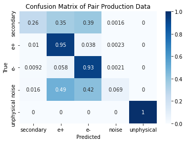
[23]:
atk.get_confusion_matrix(test, pred, log=True, save=True)
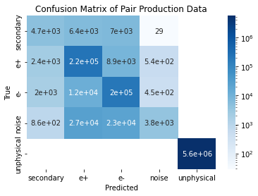
[24]:
# Getting a confusion matrix for a single event.
atk.get_confusion_matrix(test.y[1], pred[1])
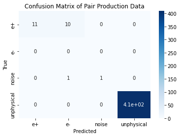
[25]:
# Checking if our confusion matrix works exactly like the sklearn confusion matrix.
from sklearn.metrics import confusion_matrix
confusion_matrix(test.y[1].argmax(-1), pred[1].argmax(-1))
[25]:
array([[ 11, 10, 0, 0],
[ 0, 0, 0, 0],
[ 0, 1, 1, 0],
[ 0, 0, 0, 409]])
Selecting an event and displaying it¶
[26]:
# Selecting an event
atk.EventSelector(trig_df, 9).sub_df
[26]:
| iEvent | iHit | planeRec | wireRec | HitRecTime0 | HitRecTime1 | Charge0 | Charge1 | x | y | z | dchMCHitId | idxTrk | parent | track | particle | |
|---|---|---|---|---|---|---|---|---|---|---|---|---|---|---|---|---|
| 218 | 9 | 0 | 1 | 307 | -3.438250e-07 | -3.374240e-07 | 8.791240e-11 | 4.485970e-11 | -24.5726 | -10.48800 | -97.0672 | 10.0 | 0.0 | -1.0 | 2 | 3.0 |
| 219 | 9 | 1 | 1 | 308 | -2.676940e-07 | -2.612890e-07 | 9.230640e-10 | 4.733260e-10 | -24.8881 | -9.58842 | -96.4122 | 9.0 | 0.0 | -1.0 | 2 | 3.0 |
| 220 | 9 | 2 | 2 | 499 | -3.151990e-07 | -3.118670e-07 | 8.384720e-10 | 6.160160e-10 | -21.4197 | 8.76699 | -45.8028 | NaN | NaN | NaN | 3 | NaN |
| 221 | 9 | 3 | 2 | 500 | -3.909870e-07 | -3.878890e-07 | 4.006080e-10 | 2.892600e-10 | -21.0699 | 9.80057 | -48.3366 | 7.0 | 0.0 | -1.0 | 2 | 3.0 |
| 222 | 9 | 4 | 2 | 501 | -2.482610e-07 | -2.451310e-07 | 5.948990e-10 | 4.356200e-10 | -20.7885 | 10.21320 | -46.2869 | 6.0 | 0.0 | -1.0 | 2 | 3.0 |
| 223 | 9 | 5 | 4 | 887 | -3.180620e-07 | -3.151630e-07 | 2.220990e-09 | 1.615930e-09 | -18.7737 | 10.93810 | -47.2600 | 5.0 | 0.0 | -1.0 | 2 | 3.0 |
| 224 | 9 | 6 | 4 | 888 | -3.583220e-07 | -3.551750e-07 | 8.116470e-10 | 5.452440e-10 | -17.9988 | 12.94990 | -58.8403 | 4.0 | 0.0 | -1.0 | 2 | 3.0 |
| 225 | 9 | 7 | 6 | 1274 | -2.905450e-07 | -2.878770e-07 | 1.985240e-09 | 1.513250e-09 | -16.7692 | 11.16370 | -40.4597 | 3.0 | 0.0 | -1.0 | 2 | 3.0 |
| 226 | 9 | 8 | 6 | 1275 | -3.927850e-07 | -3.901310e-07 | 3.498090e-10 | 2.693130e-10 | -16.4594 | 11.54520 | -38.9909 | NaN | NaN | NaN | 3 | NaN |
| 227 | 9 | 9 | 8 | 1661 | -3.365050e-07 | -3.341670e-07 | 5.461920e-10 | 4.352190e-10 | -14.9179 | 11.29340 | -33.9298 | 1.0 | 0.0 | -1.0 | 2 | 3.0 |
| 228 | 9 | 10 | 8 | 1662 | -3.757390e-07 | -3.736060e-07 | 9.481030e-10 | 7.616540e-10 | -14.6020 | 11.65680 | -32.7222 | NaN | NaN | NaN | 3 | NaN |
[27]:
# testpred contas the predicted label, not the true label.
testpred = atk.combine_testpred(test,pred)
testpred
[27]:
| iEvent | iHit | x | y | z | track | |
|---|---|---|---|---|---|---|
| 0 | 0 | 0 | -20.7778 | 10.53850 | 24.3877 | 1 |
| 1 | 0 | 1 | -18.0667 | 17.54850 | 72.9478 | 1 |
| 2 | 0 | 2 | -19.9314 | 9.08452 | 28.4150 | 1 |
| 3 | 0 | 3 | -19.6259 | 9.72355 | 28.3490 | 1 |
| 4 | 0 | 4 | -19.3891 | 5.91772 | 11.8168 | 1 |
| ... | ... | ... | ... | ... | ... | ... |
| 6130939 | 14191 | 427 | 0.0000 | 0.00000 | 0.0000 | 4 |
| 6130940 | 14191 | 428 | 0.0000 | 0.00000 | 0.0000 | 4 |
| 6130941 | 14191 | 429 | 0.0000 | 0.00000 | 0.0000 | 4 |
| 6130942 | 14191 | 430 | 0.0000 | 0.00000 | 0.0000 | 4 |
| 6130943 | 14191 | 431 | 0.0000 | 0.00000 | 0.0000 | 4 |
6130944 rows × 6 columns
[28]:
# Only prediction is plotted
atk.EventSelector(testpred, 9).plot("front 3D side")
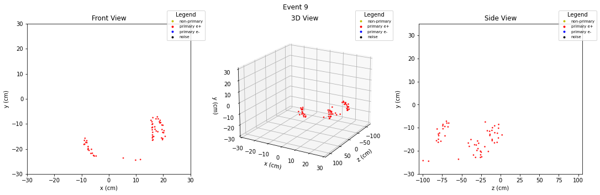
[29]:
atk.draw_histogram(trig_df,200,"hits per event")
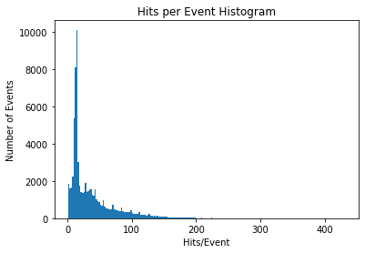
[30]:
atk.draw_histogram(trig_df,200,"reconstructed hits per event")
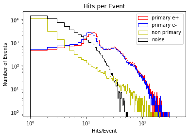
[31]:
atk.draw_histogram(trig_df,200,"reconstructed hits per event (pair)")
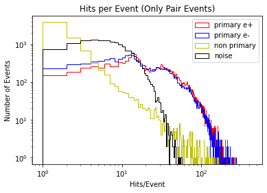
[32]:
atk.draw_histogram(trig_df,200,"time of arrival - track time")
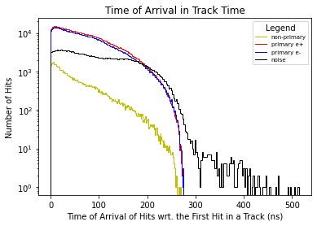
[33]:
atk.draw_histogram(trig_df,200,"reconstructed tracks per event")
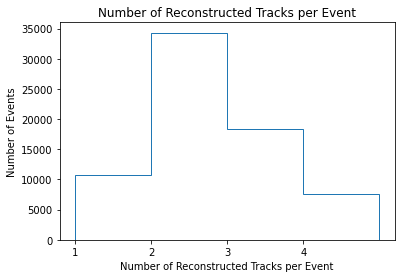
[34]:
# Prediction is different from the true histogram.
atk.draw_histogram(testpred,200,"reconstructed tracks per event")
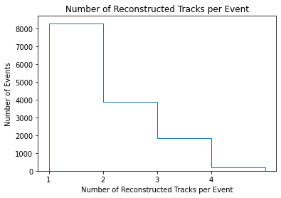
[35]:
# Displaying what fraction of tracks are predicted correctly.
stats = atk.get_stats(test,pred)
stats
[35]:
| iEvent | track | correct_hits | true_hits | norm_correct_hits | |
|---|---|---|---|---|---|
| 0 | 0 | 1 | 11 | 11 | 1.00000 |
| 1 | 1 | 1 | 11 | 21 | 0.52381 |
| 3 | 1 | 3 | 1 | 2 | 0.50000 |
| 4 | 2 | 1 | 13 | 13 | 1.00000 |
| 5 | 2 | 2 | 76 | 76 | 1.00000 |
| ... | ... | ... | ... | ... | ... |
| 34179 | 14190 | 1 | 3 | 3 | 1.00000 |
| 34180 | 14190 | 2 | 13 | 13 | 1.00000 |
| 34181 | 14190 | 3 | 1 | 2 | 0.50000 |
| 34182 | 14191 | 1 | 13 | 13 | 1.00000 |
| 34183 | 14191 | 3 | 0 | 1 | 0.00000 |
32981 rows × 5 columns
[36]:
# A table of comparison between the truth and the prediction
comparison_df = atk.compare_testpred(test,pred)
comparison_df
[36]:
| iEvent | iHit | x | y | z | track | track_predicted | |
|---|---|---|---|---|---|---|---|
| 0 | 0 | 0 | -20.7778 | 10.53850 | 24.3877 | 1 | 1 |
| 1 | 0 | 1 | -18.0667 | 17.54850 | 72.9478 | 1 | 1 |
| 2 | 0 | 2 | -19.9314 | 9.08452 | 28.4150 | 1 | 1 |
| 3 | 0 | 3 | -19.6259 | 9.72355 | 28.3490 | 1 | 1 |
| 4 | 0 | 4 | -19.3891 | 5.91772 | 11.8168 | 1 | 1 |
| ... | ... | ... | ... | ... | ... | ... | ... |
| 6130939 | 14191 | 427 | 0.0000 | 0.00000 | 0.0000 | 4 | 4 |
| 6130940 | 14191 | 428 | 0.0000 | 0.00000 | 0.0000 | 4 | 4 |
| 6130941 | 14191 | 429 | 0.0000 | 0.00000 | 0.0000 | 4 | 4 |
| 6130942 | 14191 | 430 | 0.0000 | 0.00000 | 0.0000 | 4 | 4 |
| 6130943 | 14191 | 431 | 0.0000 | 0.00000 | 0.0000 | 4 | 4 |
6130944 rows × 7 columns
[37]:
# Same event diplay, but both predictions and the true labels are visible
# plt.style.use("default")
atk.EventSelector(comparison_df, ind=9).plot("front 3D side")
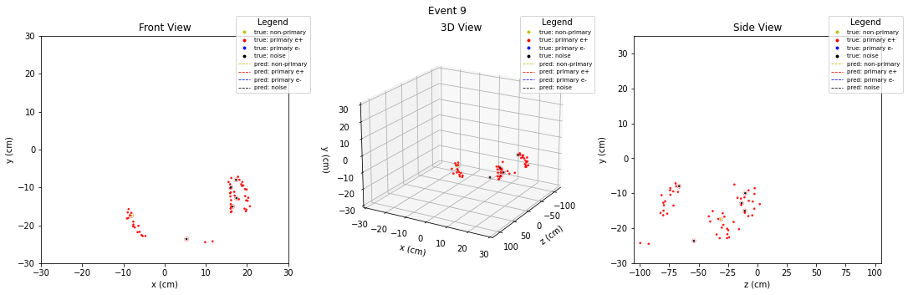
[38]:
# See the prediction contents
atk.get_event_contents(pred)
[38]:
| e+ | e- | sec | noise | tot | |
|---|---|---|---|---|---|
| iEvent | |||||
| 0 | 11.0 | 0.0 | 0.0 | 0.0 | 11.0 |
| 1 | 11.0 | 11.0 | 0.0 | 1.0 | 23.0 |
| 2 | 14.0 | 83.0 | 0.0 | 1.0 | 98.0 |
| 3 | 0.0 | 3.0 | 0.0 | 0.0 | 3.0 |
| 4 | 14.0 | 0.0 | 0.0 | 1.0 | 15.0 |
| ... | ... | ... | ... | ... | ... |
| 14187 | 0.0 | 23.0 | 0.0 | 0.0 | 23.0 |
| 14188 | 8.0 | 0.0 | 0.0 | 0.0 | 8.0 |
| 14189 | 34.0 | 0.0 | 0.0 | 1.0 | 35.0 |
| 14190 | 3.0 | 14.0 | 0.0 | 1.0 | 18.0 |
| 14191 | 14.0 | 0.0 | 0.0 | 0.0 | 14.0 |
14192 rows × 5 columns
[39]:
# See the true contents
atk.get_event_contents(test.y)
[39]:
| e+ | e- | sec | noise | tot | |
|---|---|---|---|---|---|
| iEvent | |||||
| 0 | 11.0 | 0.0 | 0.0 | 0.0 | 11.0 |
| 1 | 21.0 | 0.0 | 0.0 | 2.0 | 23.0 |
| 2 | 13.0 | 76.0 | 0.0 | 9.0 | 98.0 |
| 3 | 0.0 | 3.0 | 0.0 | 0.0 | 3.0 |
| 4 | 12.0 | 0.0 | 0.0 | 3.0 | 15.0 |
| ... | ... | ... | ... | ... | ... |
| 14187 | 0.0 | 22.0 | 0.0 | 1.0 | 23.0 |
| 14188 | 7.0 | 0.0 | 0.0 | 1.0 | 8.0 |
| 14189 | 29.0 | 0.0 | 0.0 | 6.0 | 35.0 |
| 14190 | 3.0 | 13.0 | 0.0 | 2.0 | 18.0 |
| 14191 | 13.0 | 0.0 | 0.0 | 1.0 | 14.0 |
14192 rows × 5 columns
[40]:
# Checking events where paired tracks are predicted
# at a level greater than 0.90 threshold
stats_tmp = stats.set_index(["iEvent", "track"])
stats_pos = stats_tmp.loc[:,1,:]
stats_ele = stats_tmp.loc[:,2,:]
stats_pair = pd.concat([stats_pos, stats_ele], axis=1, join="inner")
del stats_tmp
stats_pair[(stats_pair.norm_correct_hits > 0.90).all(axis=1)]
[40]:
| correct_hits | true_hits | norm_correct_hits | correct_hits | true_hits | norm_correct_hits | |
|---|---|---|---|---|---|---|
| iEvent | ||||||
| 2 | 13 | 13 | 1.0 | 76 | 76 | 1.000000 |
| 8 | 63 | 63 | 1.0 | 14 | 14 | 1.000000 |
| 11 | 38 | 38 | 1.0 | 9 | 9 | 1.000000 |
| 12 | 18 | 18 | 1.0 | 26 | 26 | 1.000000 |
| 15 | 38 | 38 | 1.0 | 34 | 34 | 1.000000 |
| ... | ... | ... | ... | ... | ... | ... |
| 14159 | 1 | 1 | 1.0 | 45 | 45 | 1.000000 |
| 14170 | 1 | 1 | 1.0 | 43 | 43 | 1.000000 |
| 14176 | 16 | 16 | 1.0 | 10 | 11 | 0.909091 |
| 14184 | 79 | 79 | 1.0 | 11 | 11 | 1.000000 |
| 14190 | 3 | 3 | 1.0 | 13 | 13 | 1.000000 |
2519 rows × 6 columns
[41]:
# Histogram related to the predicted labels
atk.draw_histogram(testpred,400,histo="reconstructed hits per event")
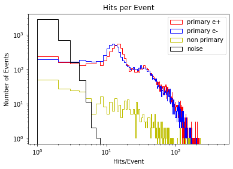
[42]:
# Histogram related to the true labels
atk.draw_histogram(trig_df,400,histo="reconstructed hits per event")
[43]:
atk.draw_histogram(trig_df,np.arange(0,150,1),histo="hits per event", histtype="stepfilled", color="purple")
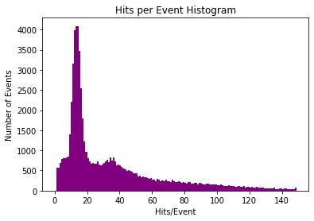
[44]:
atk.draw_histogram(testpred,400,histo="reconstructed tracks per event")
[45]:
atk.draw_histogram(trig_df,400,histo="reconstructed tracks per event")
[46]:
atk.draw_histogram(trig_df,400,histo="reconstructed hits per event (pair)")
[48]:
plt.style.use("seaborn-dark")
for param in ['figure.facecolor', 'axes.facecolor', 'savefig.facecolor']:
plt.rcParams[param] = '#212946' # bluish dark grey
for param in ['text.color', 'axes.labelcolor', 'xtick.color', 'ytick.color']:
plt.rcParams[param] = '0.9' # very light grey
# plt.grid(color='#2A3459') # bluish dark grey, but slightly lighter than background
lst = 100* np.asarray([atk.compute_efficiencies(stats, acceptance=6, threshold=i/100) for i in range(0, 100)])
plt.figure(figsize=(8,5))
plt.plot(lst[:,0], "r", label="primary e+")
plt.plot(lst[:,1], "b", label="primary e-")
plt.plot(lst[:,2], "w", label="pair")
plt.xlabel("Threshold (%)")
plt.ylabel("Efficiency (%)")
plt.title("Reconstruction Efficiencies")
plt.ylim(0,100)
plt.grid(which="minor", linestyle="-", color='#2A3459', alpha=0.2)
plt.grid(which="major", linestyle="-", color='#2A3459', alpha=1)
plt.legend()
plt.savefig("plots/rec_eff_acc.png", dpi=100)
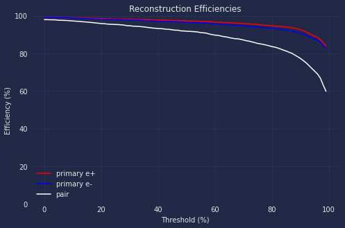
[50]:
atk.compute_efficiencies(stats, acceptance=6, threshold=0.90)
[50]:
[0.9254495504495505, 0.9049967553536664, 0.7724434035909445]
[51]:
_[0] * _[1]
[51]:
0.8375288404003524
[ ]:
# %%time
# ids = trig_df["iEvent"].unique()
# np.random.shuffle(ids)
# trig_df.set_index("iEvent").loc[ids].reset_index()
[ ]: